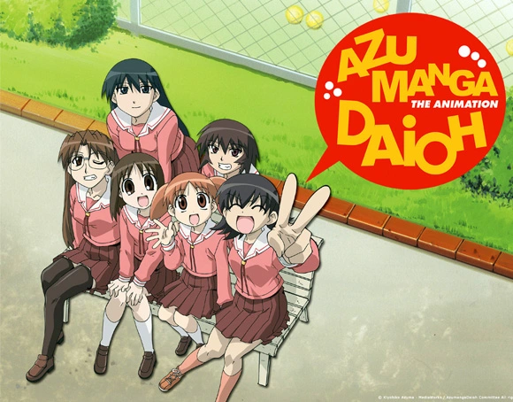

¡Azumanga Daioh Wiki!
Reseña:

La historia se centra en la vida cotidiana de seis chicas estudiantes, la fascinación de Sakaki por los gatos callejeros, los desafíos de Chiyo, una niña prodigio, al integrarse en un grupo de compañeras mucho mayores que ella, la tolerancia de Yomi hacia su amiga menos reflexiva, Tomo, las ideas peculiares de "Osaka" y la competitividad extrema de Yukari, su profesora, durante eventos como las vacaciones de verano, festivales escolares y exámenes atléticos anuales.
Aunque se enfoca en la vida cotidiana, la serie también presenta situaciones absurdas con elementos surrealistas, como los extraños sueños de año nuevo experimentados por los personajes.